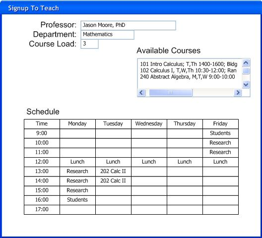

OUM |
Task Overview |
||
Method Navigation |
Current Page Navigation |
||
|
|
||||||||
The purpose of this task is to develop a deeper understanding of the look and feel of the user interface as well as the flow that the users will experience when interacting with the system. In this task, you do not design how the user interface will work, but verify your understanding of the users’ needs and validate the feasibility of the functional requirements. By adding visual elements of a user interface, tied to use case scenarios, you are also able to explore and understand the behavioral requirements in a more meaningful way.
This task may be done in parallel with Analyze Data (AN.050) and Analyze Behavior (AN.060) and is performed for every use case package documented in the Package Diagram of the Conceptual View in the Architecture Description (RD.130).
In this task, the terms “surface features” and “flows” have been chosen specifically to help characterize this work. It is not the intent of Analysis to design the specific screens and reports that will be required. The intent is simply to list and describe the user interface elements that are necessary to satisfy the functional requirements documented in the use cases. It is likely that your understanding of the specific elements will begin to emerge and you will likely refer to these as forms, screens, reports, flows, etc. but you should avoid specifying layouts or detailed navigation.
There is nothing that is specific to UML in this task. Therefore, the same techniques are employed regardless of the modeling approach that is being used on the other Analysis tasks.
In a commercial off-the-shelf (COTS) application implementation, this task is generally performed only when there is a need to gain further clarification of user interface elements that need to be developed to support a use case package. This typically applies to requirements that are to be satisfied through custom-built components, which extend the functionality of the COTS system and/or integrate the COTS system with other information systems.
B.ACT.AE Analyze - Elaboration
C.ACT.AC Analyze - Construction
User Interface Analysis
The User Interface Analysis is comprised of wireframes and storyboards that depict a high-level representation of the user’s interaction with the system.
A work product template is not provided for this task as the storyboards developed may take any number of forms – both electronic or hard copy. The storyboards for a given use case package should be organized together.
If desired, the Data Analysis (AN.050), Behavior Analysis (AN.060), and User Interface Analysis (AN.090) may be organized into an Analysis Specification (AN.100) for each use case package identified in the Package Diagram of the Conceptual View contained in the Architecture Description (RD.130).
You should follow these steps:
No. |
Task Step | Component | Component Description |
|---|---|---|---|
1 |
Use the Use Case Specification to define stories. | None | Each scenario, especially the main success scenario, within a Use Case Specification provides the textual portion of a story. |
2 |
Develop user interface elements. | Surface Features (Wireframes) Flows (Storyboards) |
During facilitated sessions with users, each part of a story is augmented with visualizations that include capturing the user interface surface features (wireframes), along with a diagram that illustrates the sequence of interactions between actors in the story and the system to achieve the goal of the story (storyboard flow). |
3 |
Update use case. | (Updated) Use Case Specification | As the storyboard evolves, new requirements are often discovered. These must be captured in the appropriate use case documentation. |
Keep in mind, the purpose of analyzing user interfaces is to gain a deeper understanding of the flow of scenarios in a use case as well as information needed by the actor during the use case. The flow and the information should all be in support of achieving the success post condition or goals of the use case and the actor. Do not worry about exactly which interface widgets will appear on some screen or web page; that would be design. Do not worry about the details of web links, buttons for navigation, or color schemes; that would be design. All the design issues will be handled during the design of the user interface not the analysis of the interface.
A story is comprised of characters (actors and the system) that interact to achieve some goal and the steps they go through along the way. The Use Case Specifications should provide you with all the stories you need. Each use case has a goal, the success post condition that the actor and the system are trying to achieve. The scenarios in a use case provide the steps along the way for achieving that goal.
Review each use case and develop stories from them using the following guidelines:
For this step, you conduct facilitated sessions to explore each story and then document them as a set of user interface elements. For each session, choose just a few stories and related use case(s). More complicated stories may require a dedicated session. The participants in the session should be representatives of the actors involved in the use case(s). Ideally, they would be the individuals who will play the role of those actors when using the new system. Consider also inviting individuals who will be impacted by what these actors can accomplish with the new system.
The most effective and efficient sessions involve stories that involve closely-related actors. If you have people in the facilitated session that do not relate to each other, then you will get boredom.
During the facilitated session you will:
After the facilitated session, you should capture the resulting visualizations and relate them to the scenarios in the appropriate use case.
Visualizations come in many different forms. It is up to you to choose the form that will work best to elicit information given your project’s unique characteristics and user stakeholders. Visualization can be as simple as a paper sketch or as complex as a Visio diagram. The visualization typically has two aspects:
You might hear the term wireframe used as a visualization technique. A wireframe is a simple drawing showing the user surface features – such as information and the structural relationships between features. A wireframe does not have detail or internal substance. Where the user interface to support a use case may require more than one wireframe, you can couple the wireframes with a diagram that illustrates the flow between wireframes.
Consider using one of the following techniques:
The following is a simple wireframe for a part of the storyboard related to the “Sign up to Teach” use case:

The development of storyboards inevitably leads to new information about your use cases. You might uncover more scenario steps or whole new scenarios. If so, update the Use Case Specification (RA.024).
This task has supplemental guidance that should be considered if you are executing a service based on the BPM Project Engineering view. Use the following to access the task-specific supplemental guidance. To access all BPM Project Engineering supplemental information, use the BPM Project Engineering Supplemental Guide.
This task has supplemental guidance that should be considered if you are doing a Webcenter implementation. Use the following to access the task-specific supplemental guidance. To access all WebCenter supplemental information, use the OUM WebCenter Supplemental Guide.
This task involves the following method roles:
Role |
Responsibility |
% |
|---|---|---|
Business Analyst |
Lead facilitated sessions and develop resulting storyboards. | 100 |
User |
Participate in the facilitated sessions and critique the storyboards. | * |
* Participation level not estimated.
You will need the following for this task:
Prerequisite |
Usage |
|---|---|
Use Case Model (RA.023) Use Case Specifications (RA.024) |
The Use Case Model and Use Case Specifications are analyzed to understand the user interface elements required to support the functional requirements documented in the use cases. |
Conceptual Prototype (IM.005) |
If available, this prototype may already include a definition of user interface surface features and flows that could be used as input to this task. |
Prerequisite |
Usage |
|---|---|
Architecture Description |
Updates to the Architecture Description may impact the user interface and must be taken into account. |
Use Case Model (RA.023) Use Case Specifications (RA.024) |
Updates to the Use Case Model and Use Case Specifications may impact the user interface and must be taken into account. |
The following templates and tools are available to assist with this task:
There are currently no templates available to assist with this task.
Tool |
Comments |
|---|---|
| JDeveloper |
The User Interface Analysis is used in the following ways:
Distribute the User Interface Analysis as follows:
Use the following criteria to check the quality of this work product:

Copyright © 2006, 2016, Oracle and/or its affiliates. All rights reserved.